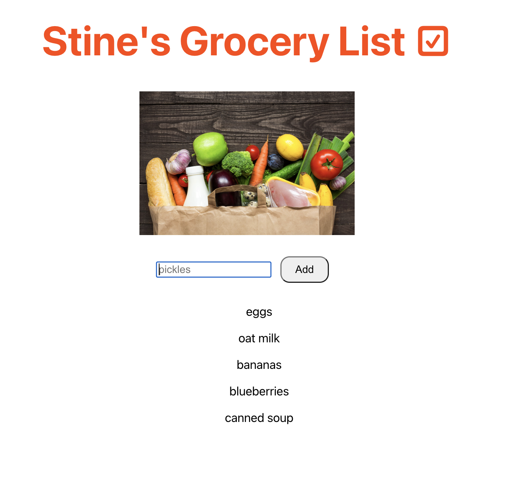
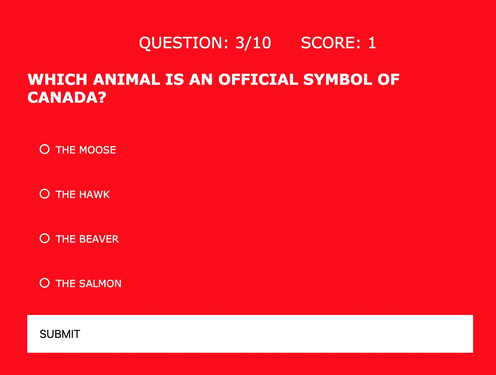

About Me
I am a Startup Swiss Army Knife, with specialities in full stack development, customer success, human resources and marketing. I also run a career coaching business out of Vancouver, Canada.
For the last 10 years I’ve worked in technology and have loved getting deep experience in a number of functions within an organization. I am the kind of person that loves to learn and try out new things. That’s why my 2019 move into full stack development has been the perfect intersection of constant learning and technology. I’ve worked at three SaaS companies (Hootsuite, 7Geese and Paycor) and felt like I was ‘on the sidelines’ of the real action happening. As a developer, I now am directly contributing to the product, not merely adjacent to it. As our lives all become more intertwined with technology, I want to be on the front lines creating our future.
What sets me apart from others is how I work in a team. Anyone can be hired for their technical skills or years of experience on a resume. I pride myself on being extremely easy to work with, across all functions and including with difficult personalities. In moments of stress, which are inevitable, my sense of humour, positive attitude and practical sensibilities motivate those around me to keep going.
In my free time I love to camp in the Pacific northwest, salsa dance, work on home renovation projects and snuggle my two dogs Lola and Annabelle.
Grocery List App
Technologies Used: React, JSX, Javascript, CSS, HTML
Every Thursday I like to make a mealplan for the upcoming week to help maximize healthy eating and saving money by using up ingredients I already have in the house. When I'm done I have a list of ingredients I need to buy from the store. This Grocery List app helps me easily keep track of the items I need to buy and I use it while I'm shopping to keep me focused on just those items.
Hero Host Recipe App
Technologies Used: HTML, CSS, Javascript, Jquery, APIs
I was inspired to build this app after having some Aussie friends over to my house who helped us cook a delicious italian dinner with gin and tonic cocktails. A lot of friends I know have the desire to host more but are reluctant to get in the kitchen and try out dinner or cocktail recipes. This app makes it easy and exciting for users to browse and select recipes for main course meals and cocktails. The user will delight their guests with their kitchen creations and become a Hero Host after using this app.

Canadian Citizenship Quiz App
Technologies Used: HTML, CSS and Javascript
In 2019 I became a Canadian citizen and part of that process included studying for and taking a citizenship quiz. I learned so much about about the history, culture and politics of the country during this process and wanted to create a playful quiz that would test other people’s knowledge. Often citizens of countries wouldn’t be able to pass their own citizenship test, so players can see if that’s the case for them or not.
